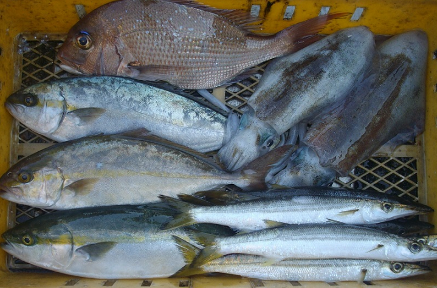
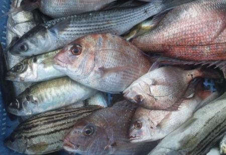
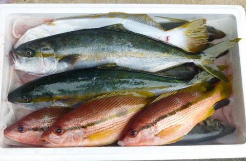

魚介類のおまかせ定期便
regular service

おまかせ定期便(鮮魚セット 約1.5kg～3kg)
4,680円 (税込・送料込み）
月に一度のお届け、産地はおまかせです。鮮魚セット 約1.5kg～3kg。目安人数2～3人。夫婦・家族にオススメです。

おまかせ定期便(鮮魚セット 約2kg～4kg)
5,680円 (税込・送料込み）
月に一度のお届け、産地はおまかせです。鮮魚セット 約2kg～4kg。目安人数2～4人。家族にオススメです。

おまかせ定期便(鮮魚セット 約3kg～6kg)
7,680円 (税込・送料込み）
月に一度のお届け、産地はおまかせです。鮮魚セット 約3kg～6kg。目安人数3～6人。大家族におススメです。
人気の漁師さんから新鮮な魚介類が定期的に届きます。
定期便の7つの特徴
1.産地は「おまかせ」となり、人気の漁師さんから新鮮な魚介類が届きます。
-->「どの漁師さんに注文すれば良いか分からない」というお悩みを解決します。
2.通常の注文より、優先してご注文が登録されます。
-->通常は注文受付上限に達すると注文が登録できませんが、定期便は優先して登録されます。
3.お届け確率が91.8%となり、安定供給に努めます。
-->天候に左右され安定供給が困難な魚介類の産地直送において、日付指定の鮮魚セット(代替出荷を希望した場合)におけるお届け実績(2018年12月)です。
4.毎月自動で注文が登録されるため、注文のお手間を削減します。
-->「注文をうっかり忘れて困る」というお悩みも解決します。
5.定期便の停止や日程変更も自由に行えるため、ご安心ください。
-->運営事務局への電話等の連絡は不要です。お気軽に、会員ページからご自由に変更できます。
6.「毎週お届け」「月2回お届け」も可能です。
-->「毎月お届け」「毎週お届け」に加え、「月2回お届け」も可能となりました。
7.「代引き」「クレジットカード」決済をご選択可能です。
-->発送できなかった場合は、もちろん費用は掛かりません。
・北海道・沖縄への発送は承れませんので、ご了承ください。
- ※ご指定の出荷日に出荷できなかった場合、その日の内に出荷キャンセルの旨をメール等でご連絡させて頂きます。
※写真はイメージであり、鮮魚セットの魚種や重量は水揚げ状況により変動致します。
※ご希望の魚介類がありましたら、備考欄に記載ください。自然相手ですので水揚げ次第なところがありますが、
ご希望にそえられるかもしれません。